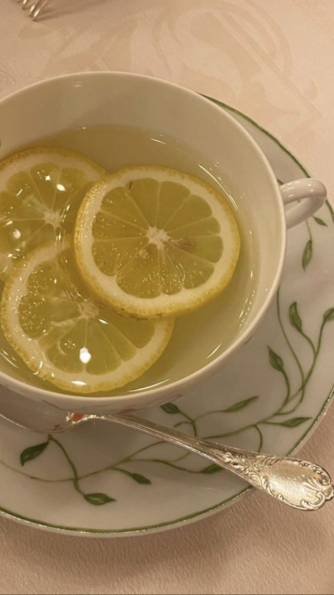

Produtos de Beleza
Clareador e hidratante
Preparação: Misture algumas gotas de água de coco com algumas gotas de suco de limão. O coco irá hidratar sua pele e o limão irá clarear e iluminá-la.

Chá de casca de limão
Preparação: Comece lavando bem o limão em água corrente, de preferência usando uma escovinha para remover qualquer resíduo. Em seguida, coloque uma xícara de água para ferver em uma panela. Assim que a água começar a ferver, adicione as cascas do limão e deixe cozinhar por cerca de três a cinco minutos com a panela tampada. Após esse tempo, desligue o fogo, coe o líquido e sirva. Se desejar, você pode adoçar com mel ou acrescentar um pouco de gengibre para dar mais sabor.